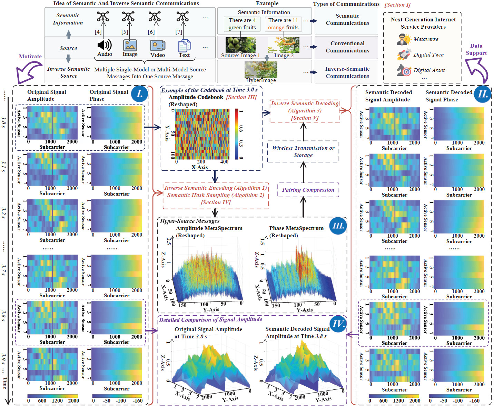
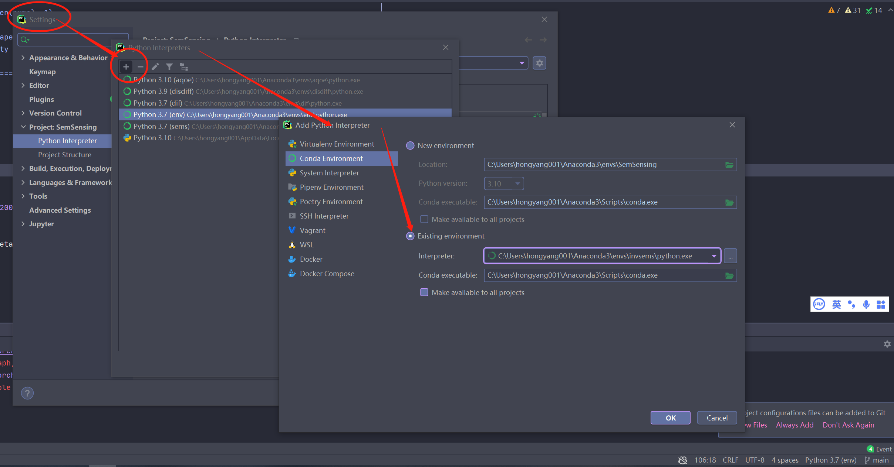
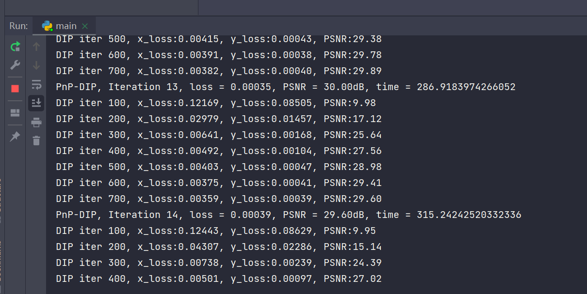
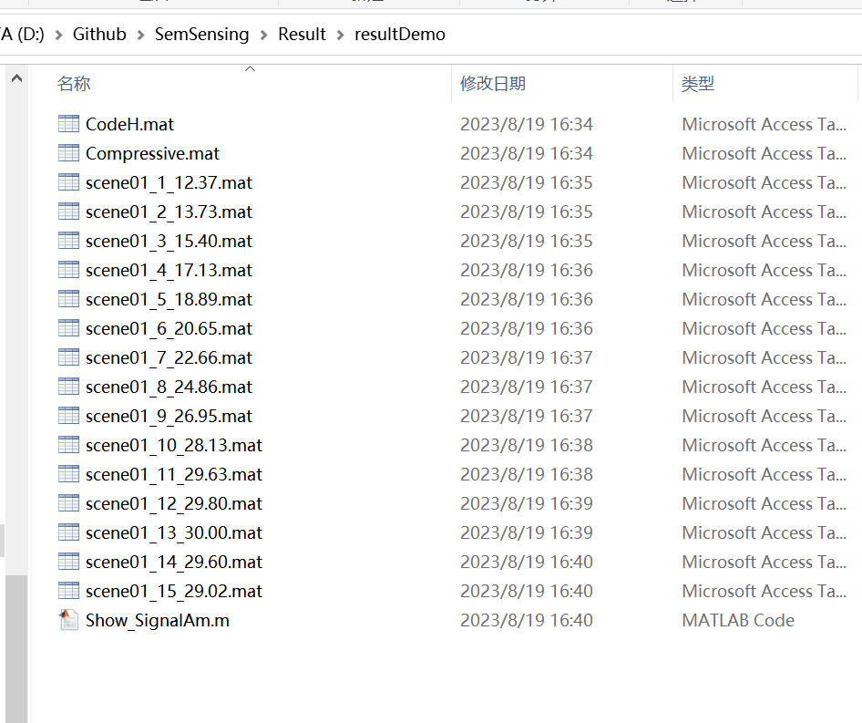
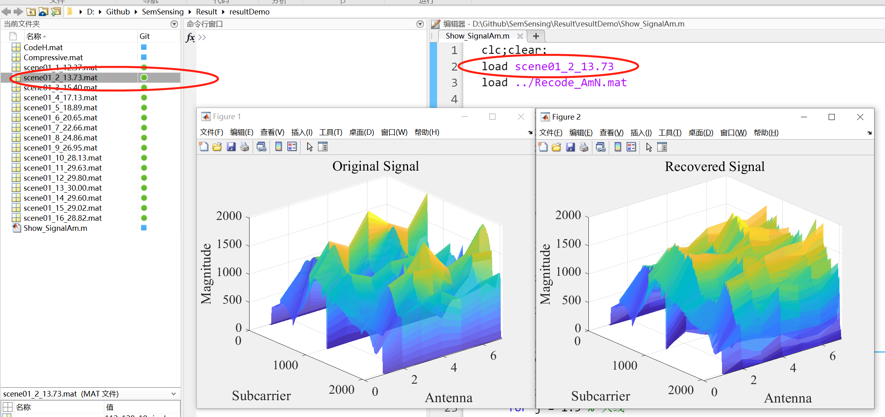
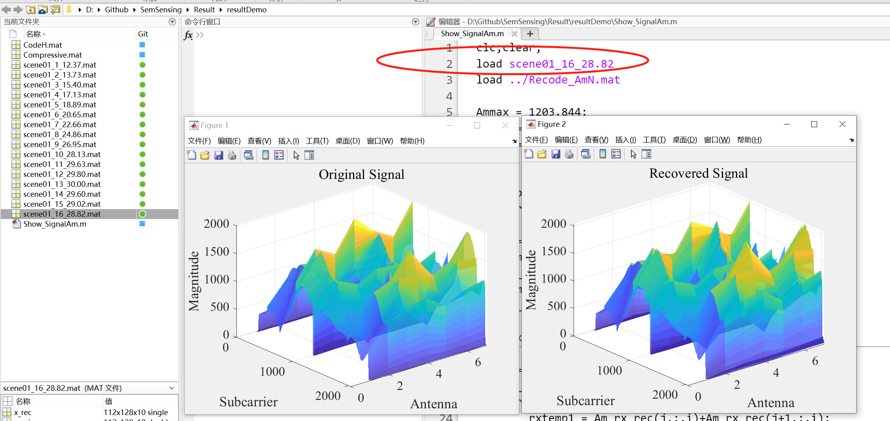

Semantic communications can reduce the resource consumption by transmitting task-related semantic information extracted from source messages. However, when the source messages are utilized for various tasks, e.g., wireless sensing data for localization and activities detection, semantic communication technique is difficult to be implemented because of the increased processing complexity. In this paper, we propose the inverse semantic communications as a new paradigm. Instead of extracting semantic information from messages, we aim to encode the task-related source messages into a hyper-source message for data transmission or storage. Following this paradigm, we design an inverse semantic-aware wireless sensing framework with three algorithms for data sampling, reconfigurable intelligent surface (RIS)-aided encoding, and self-supervised decoding, respectively. Specifically, on the one hand, we propose a novel RIS hardware design for encoding several signal spectrums into one MetaSpectrum. To select the task-related signal spectrums for achieving efficient encoding, a semantic hash sampling method is introduced. On the other hand, we propose a self-supervised learning method for decoding the MetaSpectrums to obtain the original signal spectrums. Using the sensing data collected from real-world, we show that our framework can reduce the data volume by 95% compared to that before encoding, without affecting the accomplishment of sensing tasks. Moreover, compared with the typically used uniform sampling scheme, the proposed semantic hash sampling scheme can achieve 67% lower mean squared error in recovering the sensing parameters. In addition, experiment results demonstrate that the amplitude response matrix of the RIS enables the encryption of the sensing data.
This repository demonstrates the encoder and decoder algorithm as described in "Semantic Communications for Wireless Sensing: RIS-aided Encoding and Self-supervised Decoding" by Hongyang Du et al., accepted by IEEE JSAC. The paper is available here.
To set up a new conda environment, run:
conda create --name invsems python==3.8Activate the environment with:
conda activate invsemsInstall necessary packages using pip:
pip install numpy scipy scikit-image torch torchvision opencv-python tqdmEnsure the torch version matches your CUDA version. Details here.
Set the created environment as the runtime environment:
Execute main.py to start the program.
Encoding and decoding of wireless signal amplitude information is demonstrated, with results recorded:
 Results after 2 decoding steps:
Results after 16 decoding steps:
@article{du2023semantic,
title={Semantic communications for wireless sensing: RIS-aided encoding and self-supervised decoding},
author={Du, Hongyang and Wang, Jiacheng and Niyato, Dusit and Kang, Jiawen and Xiong, Zehui and Zhang, Junshan and Shen, Xuemin},
journal={IEEE Journal on Selected Areas in Communications},
year={2023},
publisher={IEEE}
}This repository builds upon code from the following works:
Consider citing these works if their code is utilized in your research.